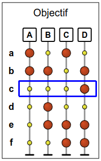
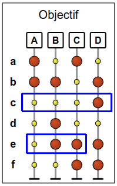
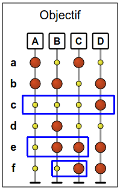
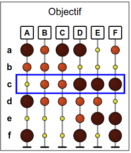
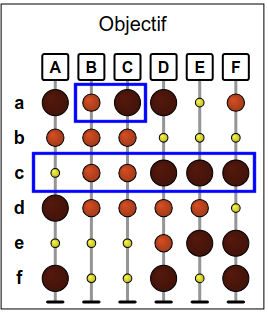
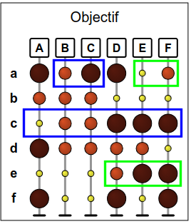
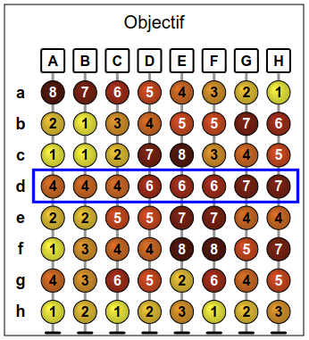
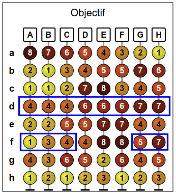
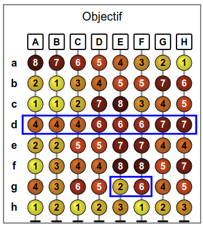
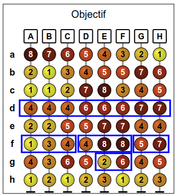

عند الضغط على زر "رَتب" ترتیب الأعمدة یتغير. بحیث توضع الدوائرالصغيرة على یسار الدوائر الكبيرة في الصف الذي تم ضغط الزر فیه. توضع الدوائر الأصغر على الیسار إلى الأكبر على الیمين في الصف الذي تم ضغط الزر فيه,. الدوائر ترتب تصاعديا في الصف الذي تم ضغط الزر فيه .
اضغط على أزرار الترتیب لكي تقوم بترتیب الأعمدة لتصبح كالشكل الظاهر في مخطط الهدف.
للحصول على الدرجة الكاملة، افعلها في 3 خطوات فقط.
تذكر النصیحة أسفل الهدف: الحل یصبح أكثر سهولة عن طریق دراسة الدوائر الظاهرة في الهدف فقط.
في خطوة الترتیب الأخيرة يجب أن تضع الكرات الصغيرة على الیسار و الكرات الكبيرة على الیمين. الخطوة الأخيرة يجب أن تكون c أو أو أو f . على سبیل المثال، افترض أن تكون c الخطوة الأخيرة.
و بالتالي، سیتم وضع العمود D في أقصى الیسار. سیكون من الضروري في الخطوات السابقة التأكد من أن الأعمدة A , B , و C مرتبة في الأماكن الصحیحة. على سبیل المثال, نستطیع أن نضمن أن یكون موضع العمود A في الموضع الأول (یسار) عن طریق ترتیب الصف e في الخطوة قبل الأخيرة.
لوضع العمود B على یسار العمود C , تستطیع أن تبدأ بالترتیب معتمداً على الصف f.
الخلاصة، أحد الحلول هي أن ترتب الصفوف f ثم e ثم c (بهذا الترتیب).
یوجد هناك عدة حلول أخرى، على سبیل المثال b ثم f ثم e, أو d ثم c ثم f, أو e ثم c ثم f, الخ...
تذكر النصیحة أسفل الهدف: الحل یصبح أكثر سهولة عن طریق دراسة الدوائر الظاهرة في الهدف فقط.
في خطوة الترتیب الأخيرة تنظم الكرات من الأصغر على الیسار إلى الأكبر على الیمين. الخطوة الأخيرة يجب أن تكون ترتیب الصف c أو الصف e . افرض على سبیل المثال أن ترتیب الصف c هو آخر خطوة.
و بالتالي، سوف یتم وضع العمود A في أقصى الیمين . سوف یكون من الضروري في الخطوات التالیة التأكد من أن: B یكون على یسار C , و الأعمدة D , E و F تقع في المواضع الصحیحة.
لوضع العمود B على یسار العمود C , یوجد هناك احتمالیة واحدة فقط لفعل ذلك، و هي أن تقوم بالترتیب معتمداً على الصف a في كل مرة قبل الخطوة الأخيرة.
یتبقى وضع الأعمدة D , E و F في الترتیب الصحیح. الصف e هو الصف الوحید الذي یضع العمود D على یسار العمود E . و لوضع العمود E على یسار العمود F , يمكن عمل ذلك مسبقاً عن طریق ترتیب الصف a , و هو ماخططنا مسبقاً لتنفیذه.
الخلاصة، أحد الحلول هي أن ترتب الصفوف a, e, c (بهذا الترتیب).
یوجد هناك حل آخر: إذا اخترنا أن ننهي بترتیب الصف e , بتطبیق منطق مشابه لما سبق، سنجد الحل a, c, e.
Recall the tip indicated in the subject: the solution is more easily by studying only the spheres of the lens.
في خطوة الترتیب الأخيرة يجب أن تنظم الكرات بشكل تصاعدي للأرقام. و بالتالي من الضروري أن تكون الخطوة الأخيرة هي ترتیب الصفd.
ترتیب الصف d سوف ینظم الأعمدة في 3 مجموعات: مجموعة على الیسار مكونة من الأعمدة A, B و C,مجموعة في الوسط مكونة من الأعمدة D , E و F , ومجموعة على الیمين مكونة من العمودین G و H . هذا لا یعني بالضرورة أن تكون الأعمدة مرتبة بشكل صحیح داخل كل مجموعة.
يمكن وضع الأعمدة A , B و C في الترتیب الصحیح في خطوة واحدة و هي الترتیب اعتماداً على الصف f .في الخطوة قبل الأخيرة. الترتیب عبر هذا الصف یسمح لك بوضع العمودین G و H في نفس الترتیب في نفس الوقت.
يتبقي لك ترتيب المجموعه الوسطي المكونه من الأعمده D , E و F . ترتيب الصف f الذي تنوي عمله في الخطوة قبل الأخيرة یسمح بوضع العمود D علي يسار العمودين E و F ومع ذلك ، لا یزال هناك طریقة لوضع E على يسار F . إذا قمنا بمقارنة الأرقام في العمودین E و F , نستطیع أن نرى أن الصف g هو الصف الوحید الذي یسمح بوضع العمود E على یسار العمودF.
بالمختصر، الحل هو ترتیب الصفوف g, f, d (بهذا الترتیب).
